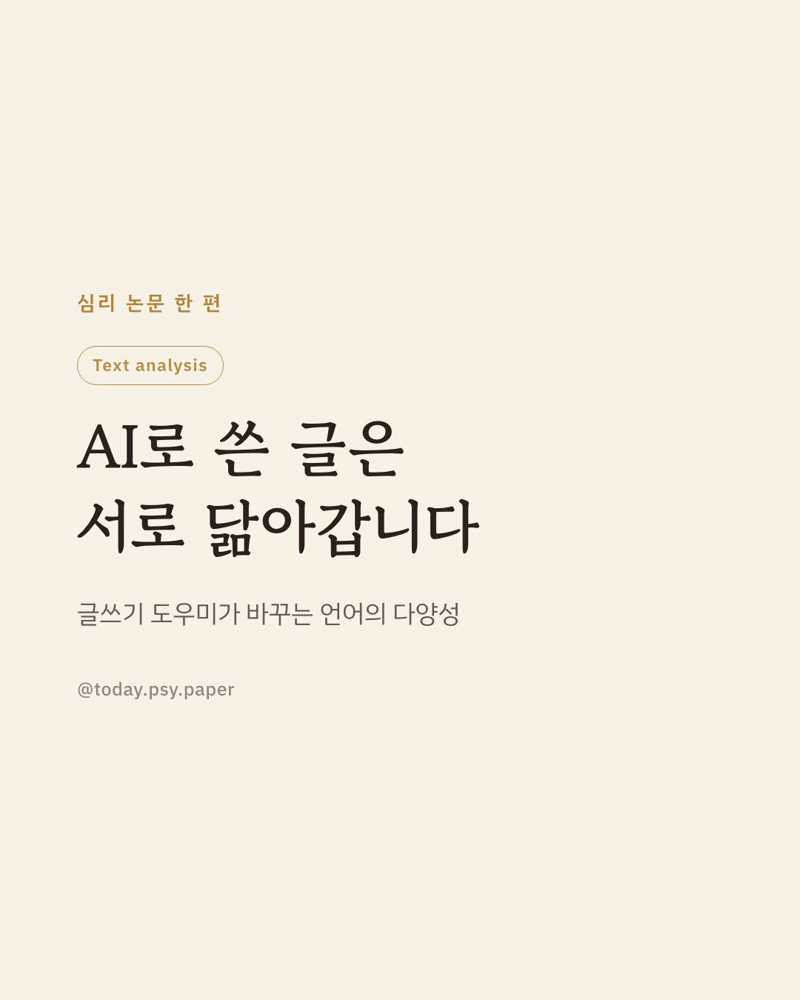
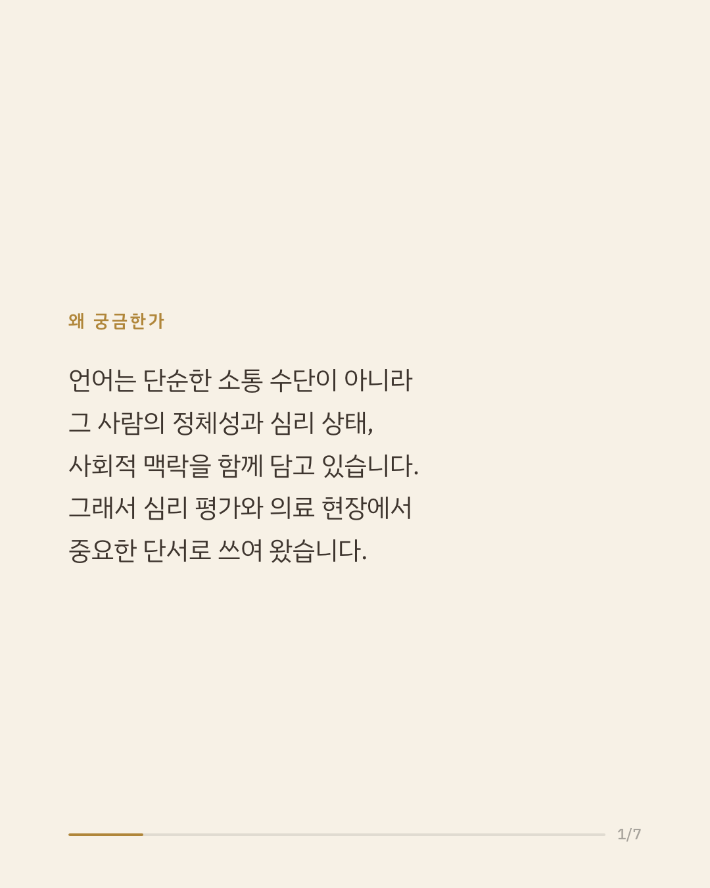
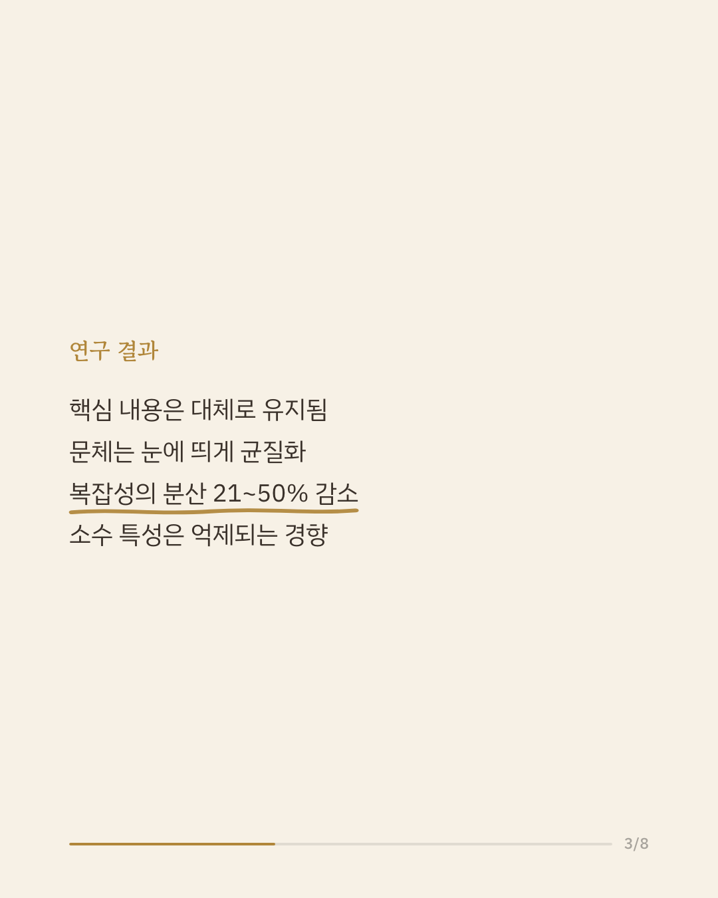
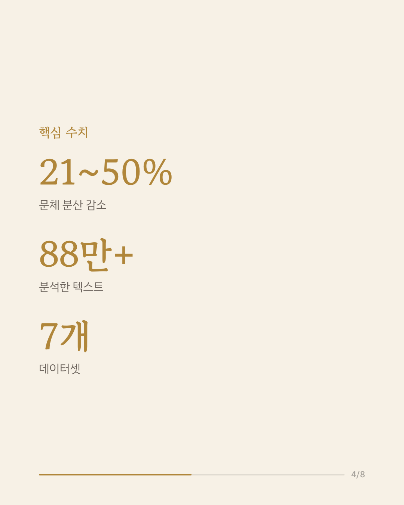
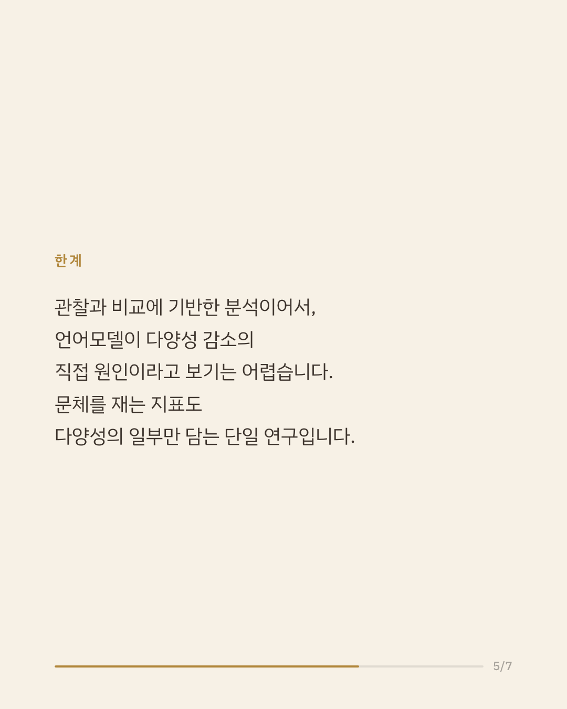
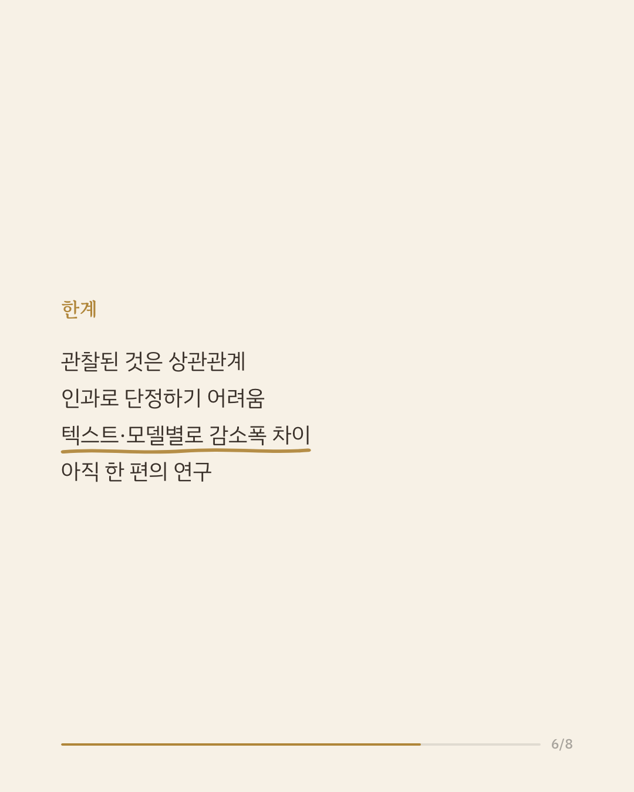
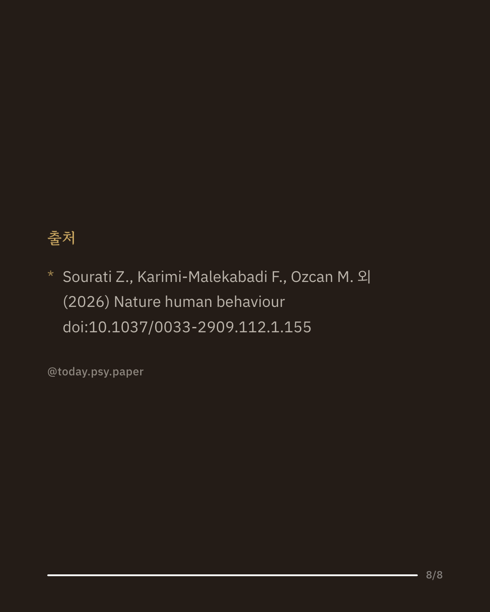

챗GPT 같은 대형 언어 모델을 글쓰기 보조 도구로 쓰는 사람이 빠르게 늘고 있습니다. 그런데 언어에는 정체성과 심리 상태, 사회적 맥락에 대한 정보가 담겨 있어 심리 평가나 마케팅, 의료 등 여러 분야에서 중요한 단서가 됩니다. 연구진은 서로 다른 영역의 7개 데이터셋, 88만 건이 넘는 텍스트를 대상으로 세 건의 연구를 진행해, 언어 모델이 글을 다듬기 전후로 문체가 어떻게 달라지는지 분석했습니다. 그 결과 글의 핵심 내용은 대체로 유지됐지만, 문체는 서로 비슷해지는 방향으로 균질화됐고, 글쓰기 복잡성의 분산이 데이터셋과 모델에 따라 21~50% 줄어든 것으로 나타났습니다. 또한 다수에게 흔한 표현 방식은 강화되고 소수의 특성은 억제되는 경향이 여러 모델과 프롬프트에서 일관되게 관찰됐습니다. 연구진은 이런 변화가 진단 과정이나 개인화 서비스, 채용 평가, 문화 다양성 보존에 영향을 줄 수 있다고 봅니다. 다만 관찰된 것은 상관관계이며, 분석 대상 텍스트와 모델에 따라 감소폭에 차이가 있었습니다. 단일 연구이므로 확대 해석은 조심해야 합니다. 출처: Nature Human Behaviour (2026), 'The shrinking landscape of linguistic diversity in the age of large language models.' #언어심리학 #심리학연구 #인공지능과사회 #정신건강정보 #논문리뷰
python3 publish.py 42637911